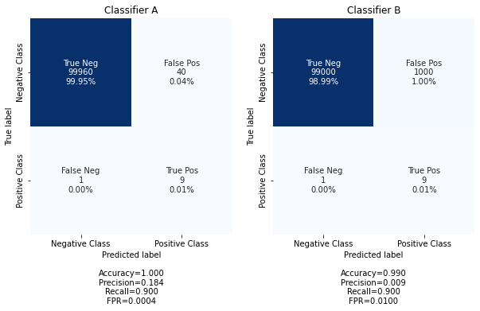

Code
import numpy as np
from sklearn.metrics import confusion_matrix
import seaborn as sns
import numpy as np
import matplotlib.pyplot as plt
import seaborn as sns
def get_conf_matrix_labels(cf_matrix):
group_names = ['True Neg','False Pos','False Neg','True Pos']
group_counts = ['{0:0.0f}'.format(value) for value in cf_matrix.flatten()]
group_percentages = ['{0:.2%}'.format(value) for value in cf_matrix.flatten()/np.sum(cf_matrix)]
labels = [f'{v1}\n{v2}\n{v3}' for v1, v2, v3 in zip(group_names,group_counts,group_percentages)]
labels = np.asarray(labels).reshape(cf_matrix.shape[0],cf_matrix.shape[1])
accuracy = np.trace(cf_matrix) / float(np.sum(cf_matrix))
precision = cf_matrix[1,1] / sum(cf_matrix[:,1])
recall = cf_matrix[1,1] / sum(cf_matrix[1,:])
fpr = cf_matrix[0,1] / sum(cf_matrix[0,:])
stats_text = "\n\nAccuracy={:0.3f}\nPrecision={:0.3f}\nRecall={:0.3f}\nFPR={:0.4f}".format(
accuracy,precision,recall,fpr)
return labels,stats_text
YTrue = np.hstack([np.ones(10),np.zeros(100000)]) # data with 100 positive and 10,000 negative cases
yPredA = np.hstack([np.ones(9),np.zeros(1),np.ones(40),np.zeros(99960)]) # A predicts 9 True positive, 40 False Positive,
yPredB = np.hstack([np.ones(9),np.zeros(1),np.ones(1000),np.zeros(99000)]) # B predicts 9 True positive, 1000 False positive
cf_matrixA = confusion_matrix(YTrue, yPredA)
cf_matrixB = confusion_matrix(YTrue, yPredB)
fig, ax = plt.subplots(1, 2, figsize=(10, 5))
axis_labels = ['Negative Class','Positive Class']
labels,stats_text=get_conf_matrix_labels(cf_matrixA)
sns.heatmap(cf_matrixA, annot=labels, fmt='', cmap='Blues',ax=ax[0],cbar=False,xticklabels=axis_labels, yticklabels=axis_labels)
ax[0].set_title('Classifier A')
ax[0].set_xlabel('Predicted label'+stats_text)
ax[0].set_ylabel('True label')
labels,stats_text=get_conf_matrix_labels(cf_matrixB)
sns.heatmap(cf_matrixB, annot=labels, fmt='', cmap='Blues',ax=ax[1],cbar=False,xticklabels=axis_labels, yticklabels=axis_labels)
ax[1].set_title('Classifier B')
ax[1].set_xlabel('Predicted label'+stats_text)
ax[1].set_ylabel('True label');